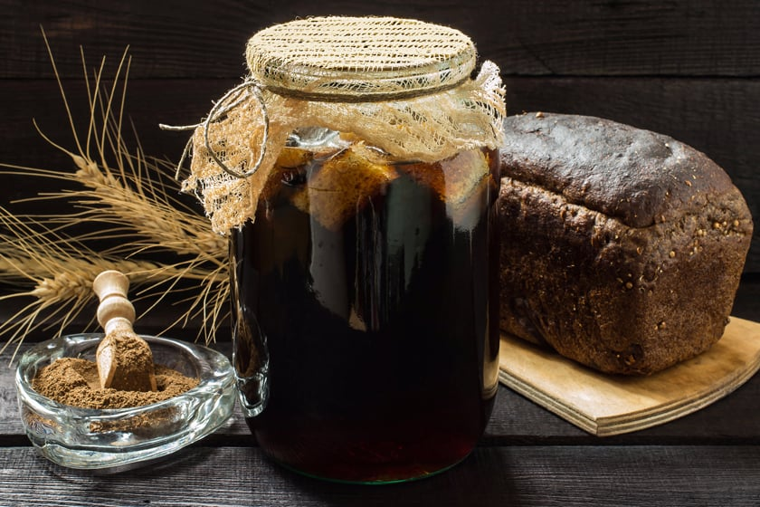

Kvass

Rye bread kvass
The health benefits from kvass come from a long slow ferment that slowly
breaks down the nutrients in the stale bread. Adding a big spoon of modern
commercial yeast completely overpowers the natural cultures, and while it
does yield a fizzy beverage quickly, it’s a rather inelegant solution.
Using commercial yeast is also not historically accurate and will produce
a much harsher beverage. Something harsher than what Russian peasants
tolerated isn’t likely to please your modern palate…
Ingredients
- 6 cups water
- 4 to 6 cups stale bread, toasted
- 2/3 cup sugar
- 3 tablespoons dry yeast
- 1/4 cup raisins, washed
Steps
-
Bring the water, sugar and seasonings/raisins (if using) to a boil. Stir
to dissolve the sweetener, and then turn off the heat. Allow the mixture
to cool to somewhere between 70 and 90 degrees (luke warm).
-
Chop the bread and toast it until it resembles slightly overdone toast
(browned but not burned).
-
Place the toasted bread and sourdough starter in a half gallon mason jar
and pour the warm liquid over the bread (ensuring that it's no more than
90 degrees to avoid killing the cultures). Add additional water if
needed to fill the jar to within an inch of the top.
-
Cap the jar loosely and allow it to ferment at room temperature for 2 to
7 days.
-
Test the mixture, and when it's cultured to your taste, filter through a
fine mesh strainer.
-
Bottle the kvass in mason jars or Grolsch bottles and store in the
fridge. Drink within 7 to 10 days, this beverage does not withstand
extended storage.
Home